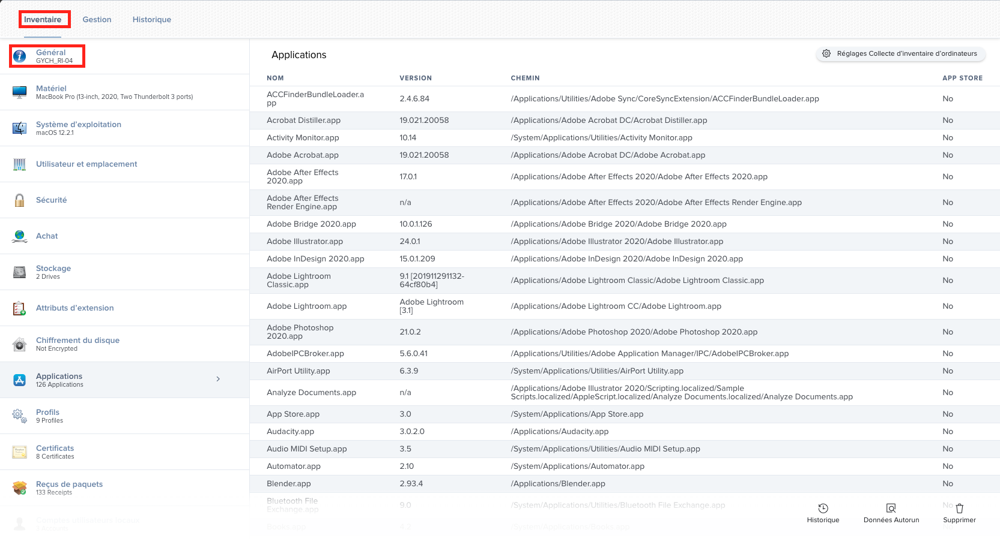
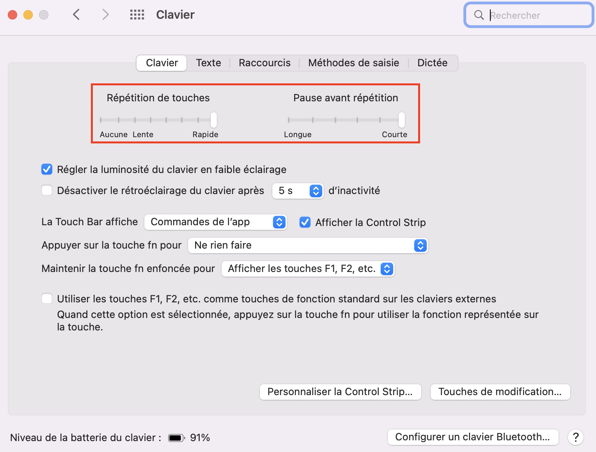

Liste des règles jamf les plus utiles/importantes#
commande qui pourrait vous être utile#
Pour exécuter une commande jamf, il suffit de connecter n’importe quel ordinateur sur le réseau de l’école par câble et se rendre dans le terminal. Cette commande sert à activer toutes les règles que n’importe quel ordinateur peut recevoir.
Attention
Pour que la commande fonctionne correctement, il faut l’exécuter plusieurs fois parce qu’il y a beaucoup de règles qui sont exécutées en même temps et certaines règles dépendent d’autres règles. Du coup il est possible que l’exécuter une seule fois ne suffise pas.
sudo jamf policy
Si vous voulez appeler une règle précisément :
sudo jamf policy -event NomDeLaRegle
Attention
il ne faut pas taper exactement le nom de la regle. Il faut taper l’événement personnalisé de la règle (l’encadré en vert, en général c’est le nom de la règle). Pour vérifier si le nom de la règle et si celui de son événement personnalisé sont les mêmes il suffit de cliquer sur la règle et vérifier.

Cette commande sert a mettre à jour l’inventaire de jamf de votre machine :
sudo jamf recon

{kind=link}
defaults write com.apple.dock autohide-time-modifier -float 0.5; killall Dock
Cette commande est plus pratique que nécessaire. En gros elle permet d’afficher plus vite la barre de menu en bas de votre mac (Le doc).
defaults write -g ApplePressAndHoldEnabled -bool false
Si vous avez l’habitude de maintenir la touche e pour faire apparaitre les diférentes possibilité d’accents cette commande n’est pas pour vous mais si vous voulez taper des lettres a la suite vite cette commande vous plaira ex : dddddddddddd.
Du même type si vous aller dans le réglages est que vous les régler comme l’image si dessous vous pourrez effacer a la même vitesse (comme pour vous déplacer).
{kind=link}
Renommage de postes / AD#
sudo jamf policy -event binding
Drivers des imprimantes#
Pour ajouter les drivers il faut tapez la commande :
sudo jamf policy -event adddriver(nom de la marque de l’imprimante)
comme par example :
HP: sudo jamf policy -event adddriverhp
Konica: sudo jamf policy -event adddriverkonica
Imprimantes par bâtiments#
FollowMe:#
sudo jamf policy -event addprinterfollowme
Bâtiment A:#
A201, A202, A210, A306, A406, A411, A502
il faut faire la commande addprinter(nom de la salle)
exemple: sudo jamf policy -event addprintera201
Bâtiment B:#
B01:
sudo jamf policy -event addprinterb01et14000
sudo jamf policy -event addprinterb01hpm750
Autres salles bâtiment B (b18, b22, b23, b25, b32, b34)
même principe que le bâtiment a, addprinter(nom de la salle)
Bâtiment C:#
sudo jamf policy -event addprinterc03
sudo jamf policy -event addprinterc06
Sport:#
sudo jamf policy -event addprinters01
sudo jamf policy -event addprinters02
Pour supprimer les imprimantes d’un poste#
sudo jamf policy -event removeprinters
Installer Microsoft Remote Desktop#
sudo jamf policy -event mrd
Installer Apple Remote Desktop#
sudo jamf policy -event ard